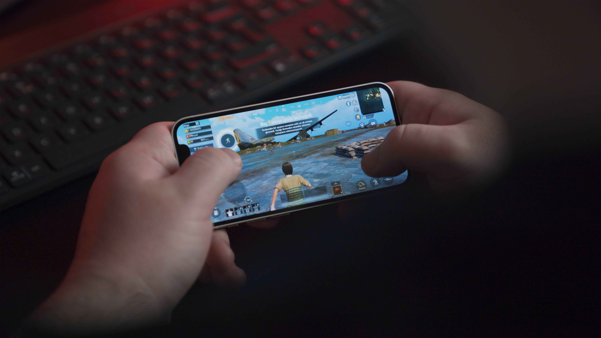

휴대 전화를 비롯한 휴대용 기기를 통해서 플레이하는 게임이다.
초기 핸드폰 시장에는 핸드폰의 낮은 성능과 작은 화면, 불편한 조작계로 인해서 퀄리티가 높은 게임을 만들 수가 없었지만, 이후 WIPI 기반의 핸드폰이 출시되면서 퀄리티가 높아진 게임이 발매되었다.
게다가 피처폰 당시 물리적인 CD를 포함한 패키지 배포를 하지 않아도 되기 때문에 기존의 유통망에서 자유로워지며, 다운로드를 통해 간단히 과금할 수 있고, 불법 복사 문제도 어느 정도 차단할 수 있다는 장점이 있었다. 하지만 모바일 게임의 대세가 피처폰에서 스마트폰으로 넘어온 지금은 모바일 게임도 불법복제 안전지대가 아니게 되었다.
하지만 패키지 게임에 비해 게임의 질은 웹게임이나 플래시 게임과 같은 간단한 게임으로 개발되므로 개발비용이 적다는 장점은 여전히 크다. 그래서 많은 수의 제작사가 모바일 게임에 투자하게 되었으며, 현재 급격히 거대해지고 있어 온라인 게임과 함께 한국 게임계 콘텐츠의 양대산맥이다.